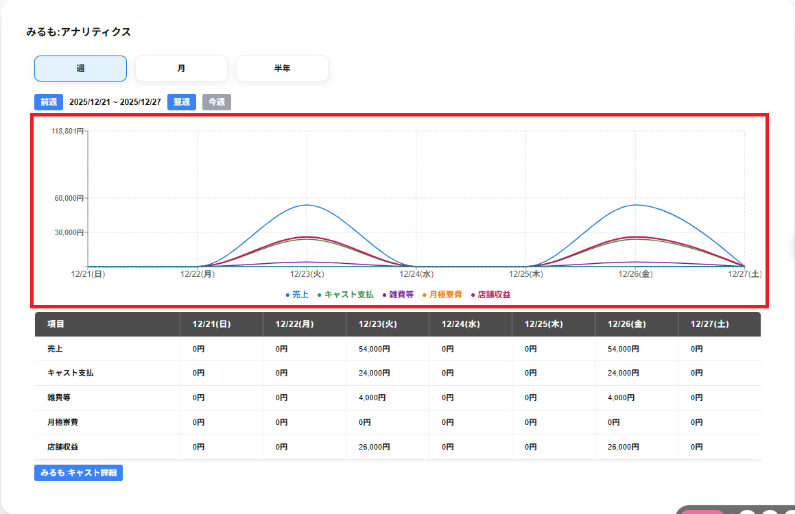

〇〇:アナリティクスの画面には以下の項目がグラフと一覧で表示されます。
・売上
期間毎の請求金額の合計が表示されます。
・キャスト支払
期間毎のキャスト支払の合計が表示されます。
・雑費等
期間毎の待機料・寮費・雑費とホテル支払の合計の金額が表示されます。
・月極寮費
期間毎の月極寮費の金額の合計が表示されます。
※店舗情報で月極寮費を未使用にしている場合表示されません。
・店舗収益
期間毎のキャストによる店舗収益の金額が表示されます。
※売上合計からキャスト支払いと雑費等を引いて、月極寮費を足したものが店舗収益になります。
グラフの縦軸には金額、横軸には年月日が表示されます。
グラフの下部には、色付きの点とアナリティクスの項目が表示され、グラフがどのアナリティクスの項目のものかを示します。
グラフの下部のアナリティクスの項目をクリックすると表示が薄くなり、クリックしたアナリティクスの項目のグラフを非表示にします。
もう一度アナリティクスの項目をクリックし、表示が濃くなるとそのアナリティクスの項目のグラフを表示します。
グラフ上にマウスを合わせると、該当時刻帯の以下の項目がポップアップで表示されます。
・期間の年月日
・店舗収益
・売上
・キャスト支払
・雑費等
・月極寮費
